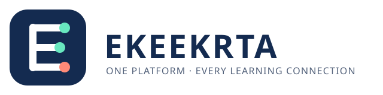
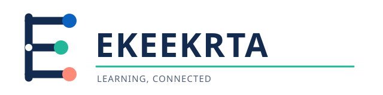
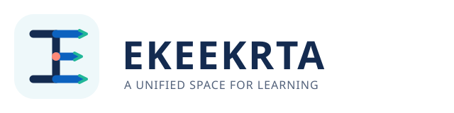

01 · Connected E

Strong app icon and primary-platform identity.
Local vector explorations. The current application logo has not been replaced.

Strong app icon and primary-platform identity.

Airier and more institutional, with visible learner connections.

A learning hub with paths moving through it.